Lumi AI
An AI analytics platform that helps retail and supply chain teams explore business data, investigate issues, and turn answers into shared workspaces.

Overview
Lumi AI helps retail and supply chain teams turn complex business data into actionable insights through natural language. As the product evolved, I helped shape the experience beyond asking questions—connecting analysis, reusable results, and ongoing monitoring in one workspace.
My contribution focused on making AI-driven analytics easier to understand, verify, and use in everyday decisions.
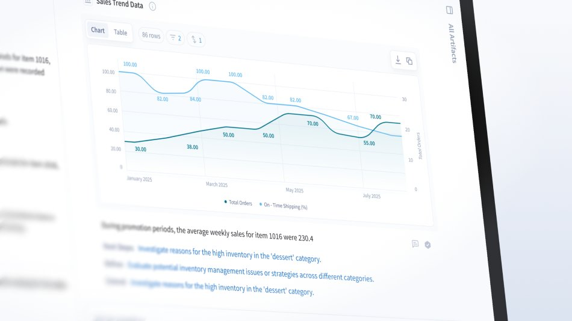
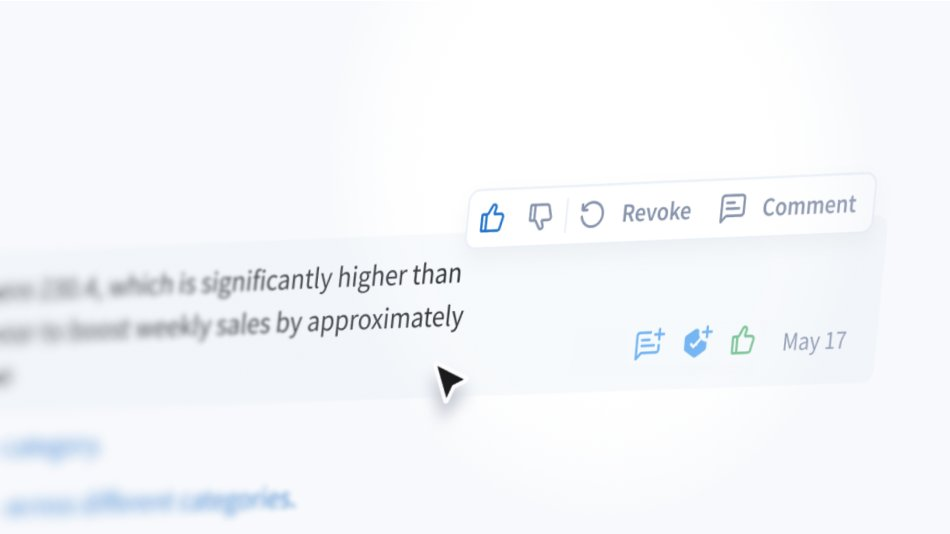
My role
As a Senior Product Designer, I partnered with the founder, product manager, and engineers to turn complex analytical capabilities into clear workflows. I worked across Chat, Boards, Knowledge Base, and the design system, connecting product decisions with detailed interaction design and implementation.
- Made AI answers easier to inspect through visible analysis steps, data, and generated queries.
- Extended the value of conversations with persistent artifacts and customizable Boards.
- Gave data context and definitions a clearer structure through Knowledge Base.
- Established shared components and tokens to support consistent product development.
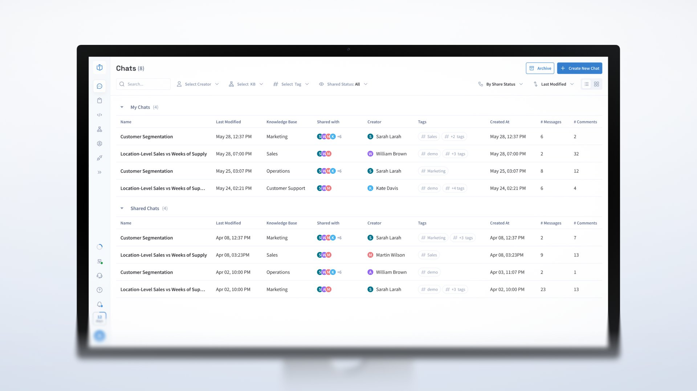
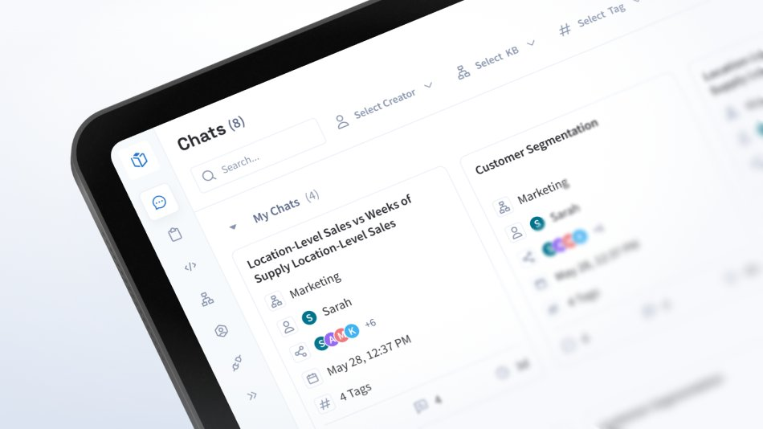
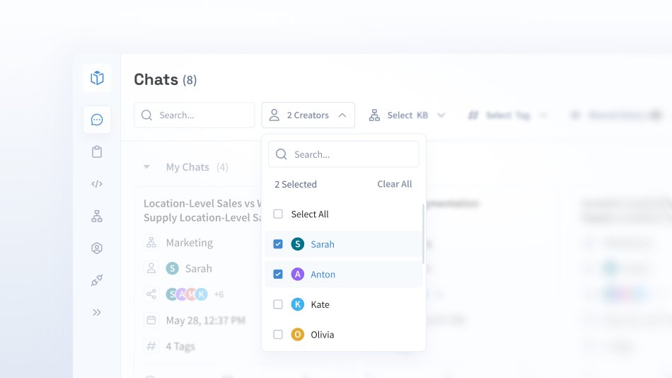
Challenge
An answer alone is not enough to support a business decision. Users need to understand its source, examine the findings, and return to useful results as their work continues.
The challenge was to make these activities feel connected while accommodating the complexity of enterprise data and an evolving AI product.
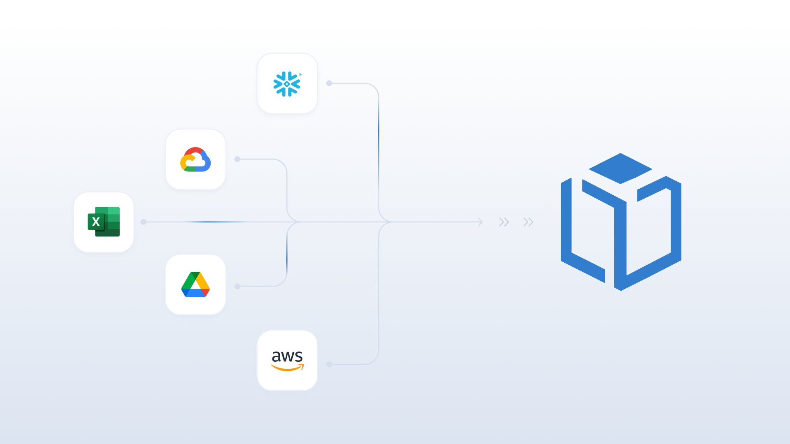
Approach
I designed clearer connections between asking a question, inspecting the analysis, and working with the result. Chat exposed the steps behind an answer, while persistent tables and charts allowed users to continue exploring without losing context.
Boards turned individual findings into customizable monitoring spaces. Knowledge Base gave teams a structured way to manage the definitions and context behind the analysis. Shared interaction patterns and components brought these experiences together.
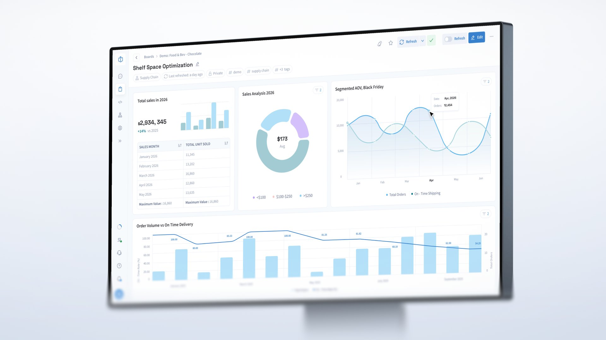
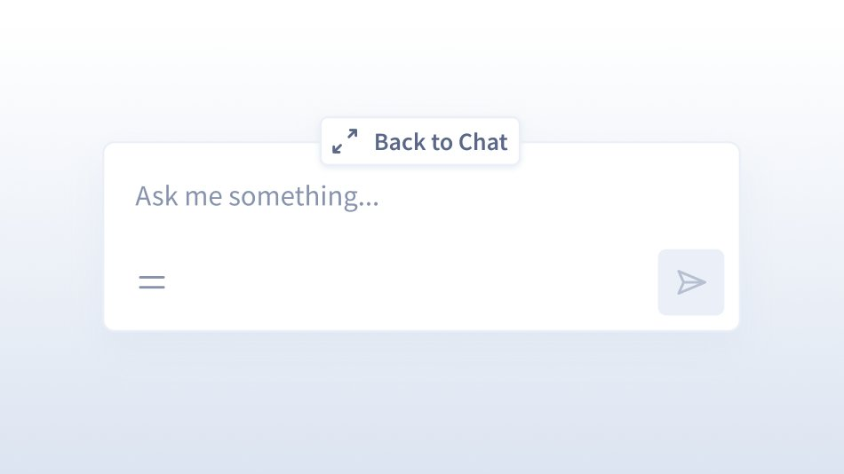
Outcome
My work helped Lumi evolve from a conversational analytics tool into a more connected analytical workspace. Users gained clearer ways to inspect AI-generated answers, keep useful findings, and revisit them through Boards.
For the product team, the design system created a common foundation across features and a clearer reference for implementation. Together, these changes supported a product experience built around transparency, continuity, and everyday use.
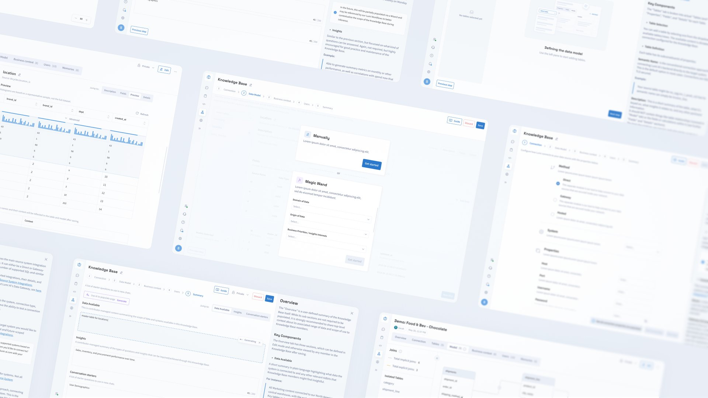
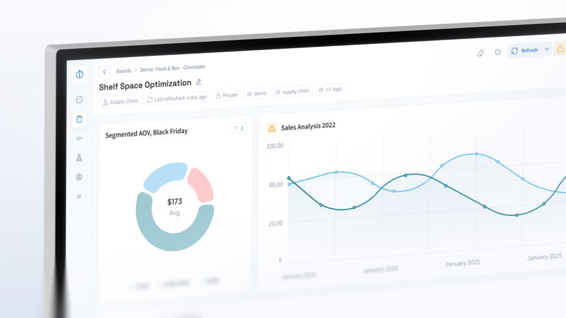
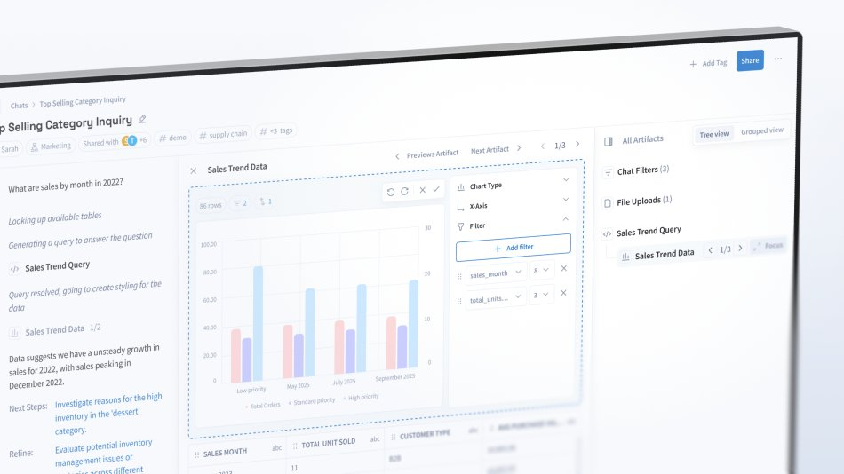
Lumi AI in numbers
$60M
Potential additional revenue identified by encouraging selected online customers to shop in-store.
1.2M units
Unfulfilled demand identified in 7 minutes across 511K+ item–store combinations.
38%
Reduction in raw material procurement costs through more cost-effective supplier selection.
$6M
Overdue payments identified, linked to $1.7M in pending orders from customers with outstanding debts.
20×
Faster report development, with 4,500+ SKUs analyzed.
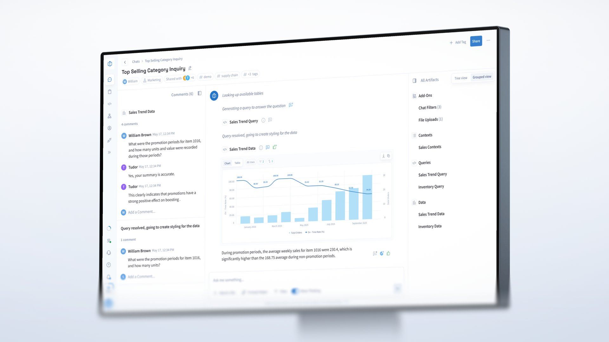
See the live product
Visit lumi-ai.com (opens in a new tab)